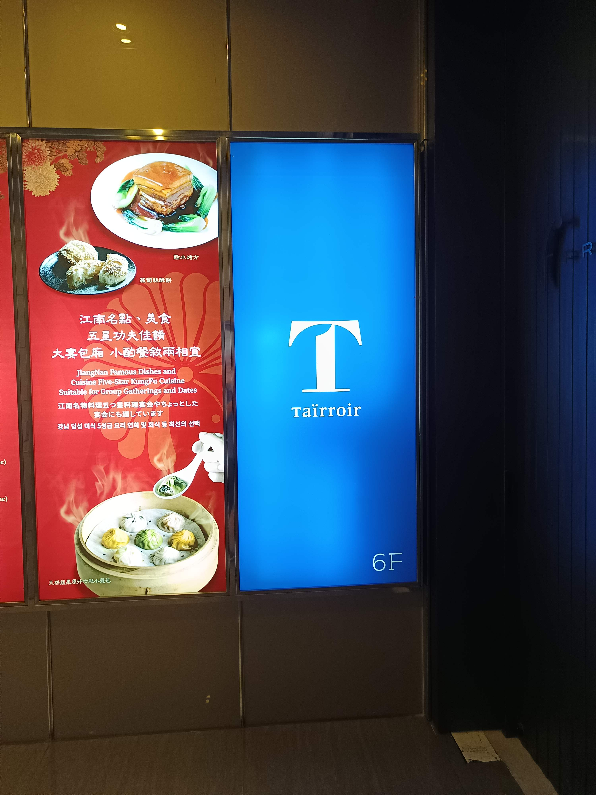
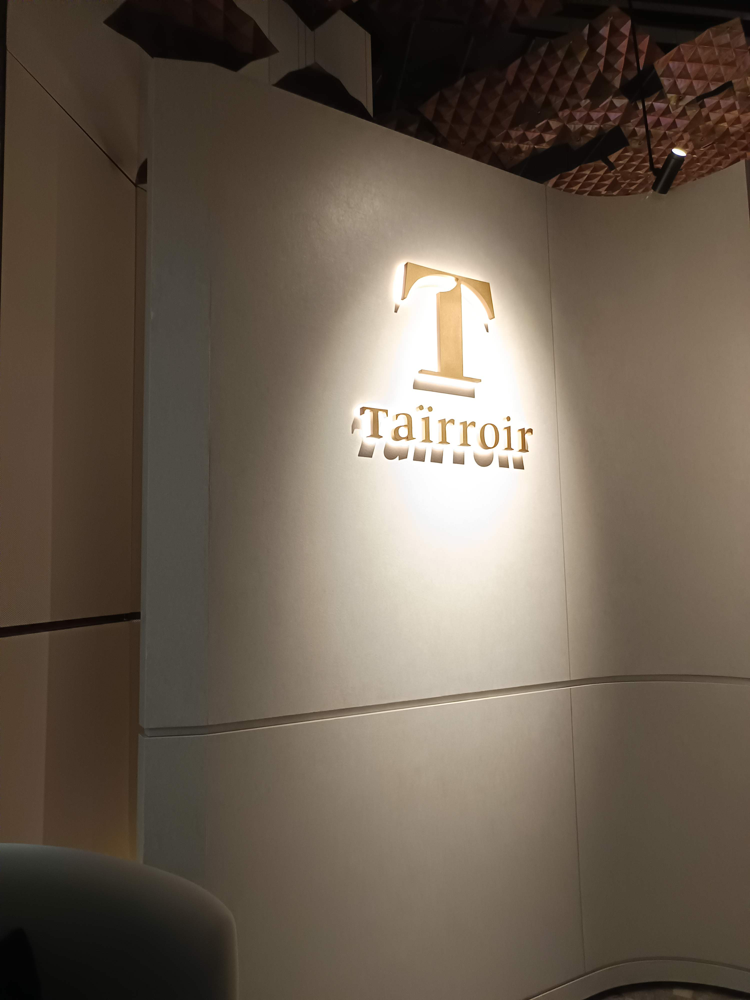
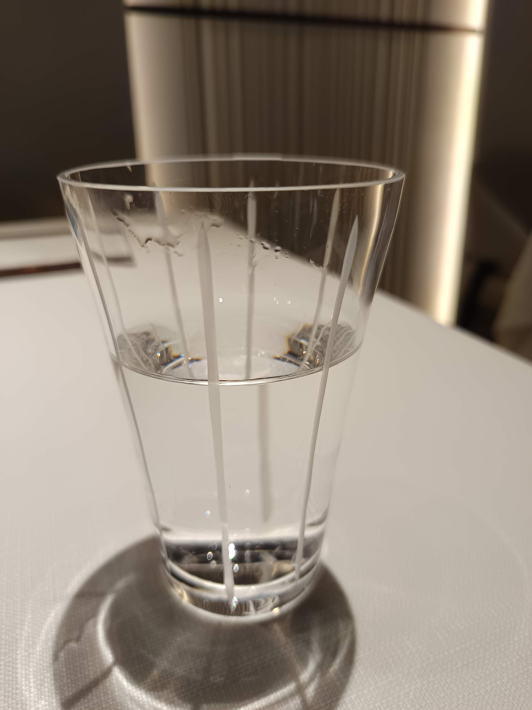
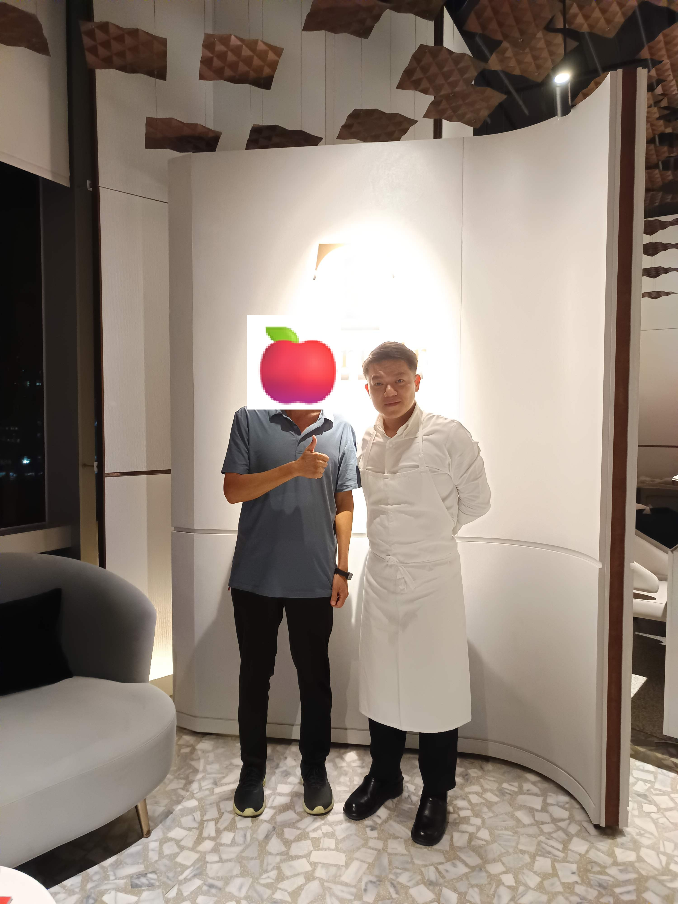

抵達與氛圍 | Arrival & Ambiance

尊榮啟航
位於大直核心的 6 樓，藍色燈箱簡約而醒目。
Located on the 6th floor in the heart of Dazhi, featuring a minimalist yet striking blue illuminated sign.

入口意象及黃銅風土天花板
入口意象及以 1,876 片黃銅立體交織出台灣丘陵的脈絡。
An impressive entrance featuring 1,876 pieces of copper panels intricately arranged to mimic the contours of Taiwan's rolling hills.

雅致桌隅
以一朵蘭花與細緻冰水，為饗宴揭開優雅序幕。
An orchid alongside pristine chilled water sets an elegant prelude to the feast.
經典饗宴時光軸 | Tasting Menu Timeline


佐餐酒水與飲品探索 | Drinks & Sparkling Tea
| 品名 / Description | 價格 / Price |
|---|---|
|
最澄茶香檳三重奏
Trio Saicho Sparkling Tea (200ml each)
|
NT$ 1,800 |
|
焙茶之韻
Saicho Hojicha (200ml)
|
NT$ 680 |
|
大吉嶺之華
Saicho Darjeeling (200ml)
|
NT$ 680 |
|
茉莉花之舞
Saicho Jasmine (200ml)
|
NT$ 680 |

與主廚相遇
Meet Chef Kai Ho (何順凱)
「以法式烹調技法，解構台灣靈魂與風土。」
"Deconstructing Taiwanese soul and terroir through French culinary techniques."
主廚何順凱（Kai Ho）以敏銳的直覺與豐富的在地情感，將台灣傳統小吃、辦桌文化與家常菜記憶，利用當代法式精準技法重組。在他的帶領下，Taïrroir 態芮於 2023 年榮獲米其林三星肯定，成為全球首家獲得三星殊榮的現代台灣料理餐廳。
Chef Kai Ho leverages sharp intuition and local passion to deconstruct Taiwanese night market snacks, banquet dishes, and home-cooked memories using precise French techniques. Under his leadership, Taïrroir was awarded three Michelin stars in 2023, becoming the world's first modern Taiwanese restaurant to achieve 3 Michelin stars.